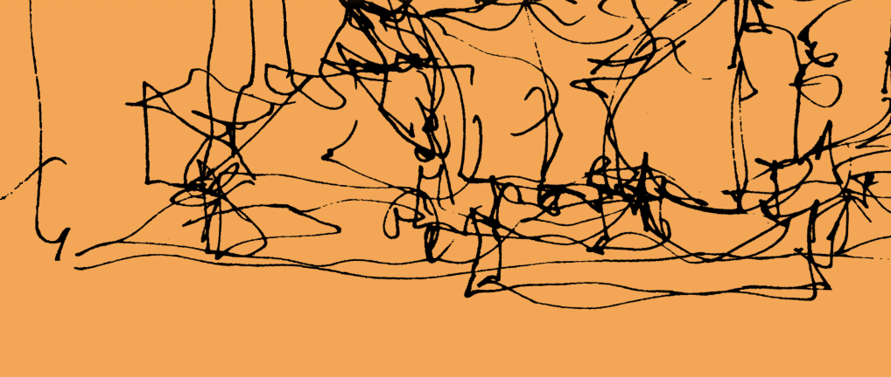
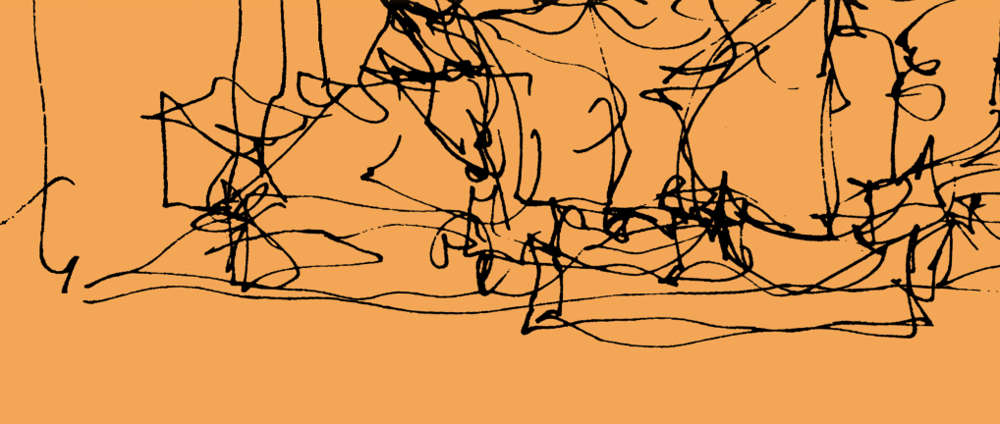

Canopy Planet


 


Ganadora en FWA – Site of the Day (2024) Accesibilidad: Tiene accesibilidad básica bastante bien implementada. Por ejemplo, las fuentes tienen buen tamaño y contraste con el fondo, y los botones son grandes y visibles. Inspeccionando me di cuenta de que no todos los elementos son accesibles con teclado y algunos textos animados no están bien descritos para lectores de pantalla, lo cual afecta negativamente a la accesibilidad. Aun así, según el análisis dado por Lighthouse, la accesibilidad de la web está muy por encima de la media en webs de marcas visuales. Responsividad: Es una web súper responsiva. Se nota que pensaron en el móvil desde el inicio. El menú se convierte en icono, las animaciones se adaptan, y el diseño no pierde nada de fuerza en pantallas pequeñas. Es muy ligera,es decir que no tiene demasiado peso en relación a imágenes, animaciones, etc. Lo que ayuda mucho a que cargue rápido en móvil. SEO: Tiene estructura bien organizada: encabezados bien puestos, alt en imágenes y un título claro. Usa buenas prácticas, aunque algunas animaciones con JavaScript podrían dificultar un poco el rastreo de contenido por buscadores. El nombre del producto es el centro del SEO, y claramente está orientada a vender y posicionar su bebida.